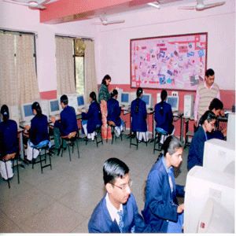
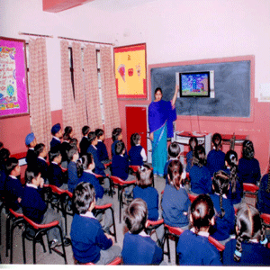
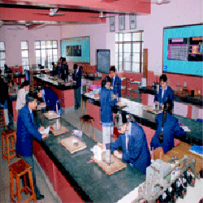
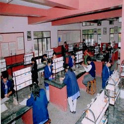
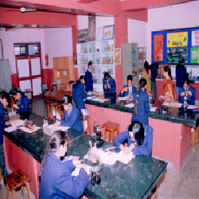
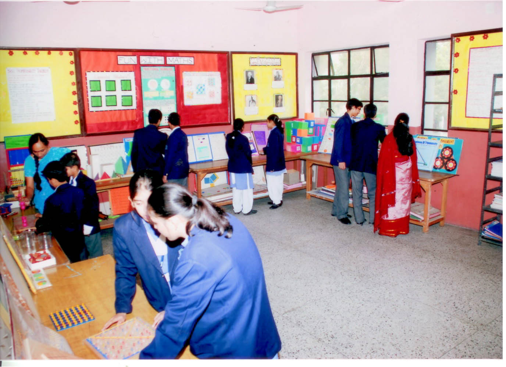

With the vast use of internet, it has become essential for every student to have the knowledge of it and its tools to explore the unlimited ocean of knowledge which is on the web. As computers are a daily utility, they have gained immense importance in day to day life. Their increasing utility has made computer education the need of the day. Our school has five well-equipped computer laboratories with advanced infrastructure in terms of hardware and software to cater to the requirements of the students, teachers and curriculum. The computer curriculum is updated from time to time in keeping with the emerging trends in the Information Technology. One of the laboratories caters to students learning C++ in classes XI and XII. Three Laboratories are dedicated to classes III to X where the children learn HTML, Visual Basic, CorelDraw, Q-Basic, and Internet. We have an Audio-Visual Laboratory in our school where particular attention is paid to the goal of grasping knowledge accurately and quickly, improving comprehension and retention. Educational, moral and cartoon CD's are shown with the purpose of imparting knowledge. In order to move ahead with the world, we have competent teachers to train our students in the latest computer technology. Computers, which have such a wide variety of applications are indeed ruling the society. To keep up the pace in the fast life of today computer education is extremely important.



The school has state-of-the-art laboratory facilities in Physics, Chemistry and Biology, The laboratories are designed to provide effective practical learning environment for the students through experimentation based on classroom interaction with the subject experts. The work done in the laboratories helps students to explore and understand the complex phenomena related to physical, chemical and biological worlds, more explicitly, which has a direct bearing on the development of scientific temper, practical skills and teamwork qualities amongst the young minds. The laboratory work involves doing experiments, investigatory projects, carrying out activities etc. as per the latest C.B.S.E. syllabi and curriculum for the classes IX to XII, under the supervision and proper guidance of the subject teachers and laboratory assistants. The facilities available in the laboratories are utilized by primary and middle sections of the school as well, for understanding scientific principles and phenomena in a simple and better way. At Oxford, students' safety and security while in the laboratories, is of utmost priority, which is taken care of by the usage of proper Personal Protective Wares.

Teaching of mathematics should deal with the process and not just confine to transferring the knowledge from the mind of the teacher to notebooks of students through the tip of a pen and for such a phenomenal change in teaching of maths, a right ambience is required and it is definitely 'Mathematics Laboratory'. Our school also has a Maths Lab equipped with latest technological aids to provide a platform to students to develop their higher-order thinking. Here they are taught the basic as well as difficult and abstract concepts of Maths. The Maths Lab is optimally utilized as a hub of stimulating activities for students of all age groups, thereby benifitting them in many ways : Through the projects conducted in the lab, the student learns to appreciate the relevance of maths to real life. He no longer sees mathematics as an abstract subject. The student develops the potential to engage in creative and original thinking. He learns to conduct research on his own. The student develops his analytical thinking since in writing a program for solving a problem he is actively thinking about mathematical process behind the program. Helps to sustain the students' interest in the subject.